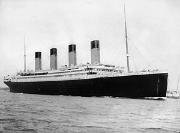

RMS Titanic was a British ocean liner that sank on 15 April 1912 as a result of striking an iceberg on her maiden voyage from Southampton, England to New York City, United States. Of the estimated 2,224 passengers and crew aboard, approximately 1,500 died, making the incident the deadliest sinking of a single ship at the time.[a] Titanic, operated by the White Star Line, carried some of the wealthiest people in the world, as well as hundreds of emigrants from the British Isles, Scandinavia, and elsewhere in Europe who were seeking a new life in the United States and Canada. The disaster drew public attention, spurred major changes in maritime safety regulations, and inspired a lasting legacy in popular culture.
